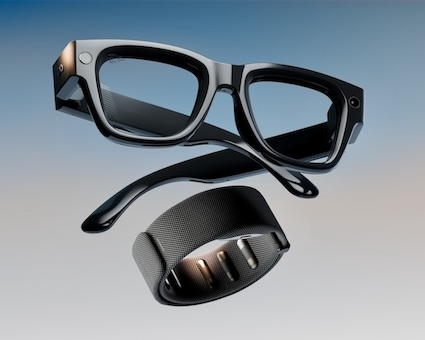

Wearable devices
Wearable computers integrate digital interaction directly onto the body through devices such as bracelets, rings, watches, and smart glasses. These interfaces are constantly evolving and could revolutionize the way people access computers in their daily activities. Worn on the wrist or face, they allow users to issue commands and receive information without having to hold or in general operate a screen, potentially making digital interaction more discreet, and easily accessible while doing other tasks. One approach involves the use of wristbands that detect electrical activity in the muscles via surface electromyography. These signals are translated into commands for the computer. Since muscle contractions do not always produce visible movements, this technology allows for discreet input without the need for large gestures. By integrating smart glasses, the system creates a dual interface with the wrist capturing inputs, while the glasses display the responses.

Future features and applications
In the future, it could be possible to send a message with a simple muscle activation and view the response in one’s field of vision. The objective would be to minimize the physical effort required to access information and make interactions quick and seamless while performing other activities. For example, during a conversation, a person could consult an AI assistant or receiving help remembering something without having to take out their phone. This approach transforms the way we interact with technology by integrating digital assistance into ongoing activities, with commands and responses available when needed. Future developments could make these technologies even more advanced. Smart glasses could potentially display virtual objects or even people into the surrounding space, while electronic contact lenses integrate digital information directly into the field of view even more subtly, although they are still experimental.
Potential Impacts
Even though the interaction becomes less visible, it still requires attention. Checking for answers during a conversation can be distracting, and what appears to be simultaneous may involve shifts in focus.
Wearable interfaces could simplify the access to information but also increase the risk of distractions.
Managing attention remains a real challenge for future human-computer interactions. interfaces must communicate clearly, distinguish intentional commands from normal movements, and allow users to control interruptions.
Their success will depend on how well they support activities without reducing awareness of the surrounding environment. offering simple, low-effort interactions, while giving users the freedom to choose when to focus on the device and when to focus on the people and activities around them.
Conclusion
Wearable interfaces could bring computing more closely into everyday life, allowing people to access digital assistance through brief, discreet actions.
The most meaningful development would be an interaction that requires offering simple and low in effort interactions, while giving users the freedom to choose when to focus on the device and when to focus on the people and activities around them.
Sources (APA Style)
- Wikiopedia Contributors. Wikipedia contributors. (n.d.). Smart glasses. Wikipedia. https://en.wikipedia.org/wiki/Smartglasses . Article Link
- Wikiopedia Contributors. Wikipedia contributors. (n.d.). Electromyography. Wikipedia. https://en.wikipedia.org/wiki/Electromyography . Article Link
- Wikiopedia Contributors. Wikipedia contributors. (n.d.). Bionic contact lens. Wikipedia. https://en.wikipedia.org/wiki/Bionic_contact_lens . Article Link
- Wikiopedia Contributors. Wikipedia contributors. (n.d.). Human multitasking. Wikipedia. https://en.wikipedia.org/wiki/Human_multitasking . Article Link